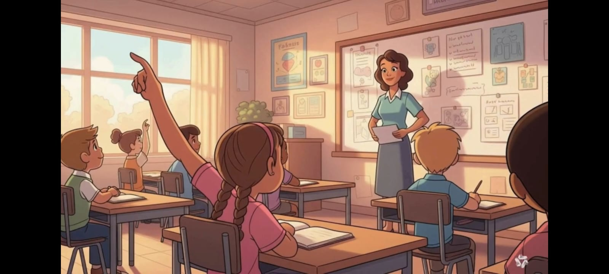
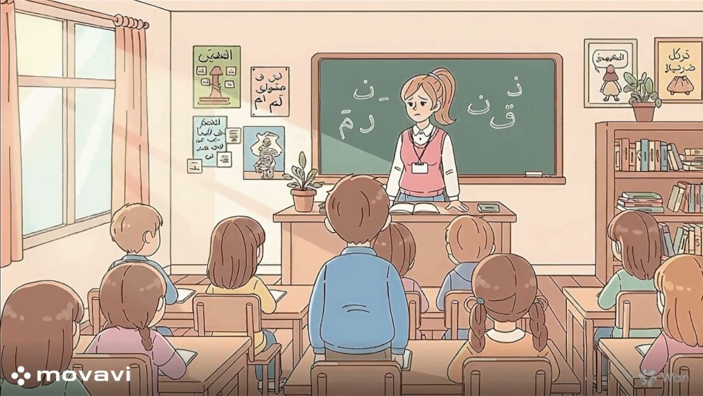

بعد الانتهاء من تدريس هذا الدرس يفترض أن يكون التلميذ قادرًا على:
أن يُعرّف مفهوم الاستئذان بأسلوبه الخاص كخلق إسلامي واجتماعي رفيع.
أن يُعدد ثلاث حالات أساسية يجب فيها الاستئذان (الدخول على الآخرين، استخدام أدوات الغير، المقاطعة أثناء الكلام).
أن يستنتج الآثار السلبية لعدم الاستئذان (مثل: الغضب، الإزعاج، ضياع الحقوق).
أن يُميز بين السلوك الصحيح والسلوك الخاطئ في الاستئذان.
أن يستخدم عبارات الاستئذان المهذبة (هل تسمح لي؟، من فضلك).
أن يُطبق مهارة طرق الباب والانتظار عمليًا.
أن يلتزم بآداب الحديث من خلال رفع اليد أو الانتظار حتى ينتهي الطرف الآخر من كلامه.
أن يميل إلى استخدام لغة مهذبة عند طلب الإذن (مثل: "هل تسمح لي؟"، "من فضلك").
الاستئذان لاستخدام ممتلكات الآخرين

"هل تسمح لي باستعارة قلمك لو سمحت؟"
"من فضلك يا صديقي، هل يمكنني قراءة قصتك بعد أن تنتهي؟"
"أعجبتني ألوانك، هل تأذن لي باستخدام اللون الأحمر قليلاً؟"
الاستئذان للدخول إلى مكان (منزل أو غرفة)
"السلام عليكم، هل تسمحون لي بالدخول؟"
"هل هذا الوقت مناسب للزيارة أم أنكم مشغولون؟"
(بعد طرق الباب ثلاثاً): "هل يمكنني الدخول يا أمي؟"
الاستئذان للمشاركة في اللعب أو الحديث
"هل يمكنني الانضمام إليكم في هذه اللعبة الجميلة؟"
"معذرة، هل تسمحون لي أن أشارككم برأيي في هذا الموضوع؟"
"هل هناك متسع لي لأجلس معكم؟"
الاستئذان من المعلم (داخل الفصل)
"بعد إذنك يا معلمي، هل يمكنني الذهاب لشرب الماء؟"
"لو سمحت يا معلمي، لدي سؤال حول هذه النقطة."
"أعتذر يا معلمي، هل يمكنني مبراة قلمي الآن؟"
الاستئذان قبل الانصراف أو المغادرة
"بعد إذنكم، يجب أن أذهب الآن للمنزل."
"لقد استمتعت معكم، هل تسمحون لي بالانصراف؟"
"وداعا إلى اللقاء"

نشاط (1):
الموقف:
رأيت مع زميلك في الفصل علبة ألوان جميلة، وأردت أن تستخدم اللون الأحمر والأبيض والأسود لرسم علم بلادك.
1. ماذا تفعل قبل أن تمد يدك لتأخذ الألوان؟
2. ما هي الجملة المهذبة التي تستخدمها لطلب الاستئذان من زميلك؟
3. تخيّل رد فعل زميلك: إذا وافق، ماذا تقول له؟ وإذا رفض لأنه يحتاج اللون الآن، كيف تتقبل ذلك بأدب؟
نشاط (2):
الموقف أ :
أردت الدخول إلى غرفة المعلمين للسؤال عن شيء ما.
الموقف ب:
أردت الدخول إلى غرفة نوم والديك وهما نائمان.
1. كم مرة يجب أن تطرق الباب قبل الدخول؟
2. ماذا تفعل إذا طرقت الباب ولم يرد عليك أحد؟
3. لعب أدوار: قم بتمثيل طريقة "طرق الباب" بهدوء (دون إزعاج) وكيفية طلب الإذن بالدخول بكلمات مثل: "هل تسمحون
لي بالدخول؟".
نشاط (3):
الموقف :
وجدت والدتك تتحدث في الهاتف، وأردت أن تسألها "ماذا سنأكل اليوم؟".
1. هل من الأدب أن تقطع حديثها فجأة؟
2. كيف تشير لوالدتك بأنك تريد التحدث معها دون أن تزعجها؟ (مثلاً: الوقوف
بجانبها بهدوء أو وضع يدك
على كتفها بلطف حتى تنتهي).
3. بماذا تبدأ جملتك عندما تنهي هي المكالمة؟ (مثال: "معذرة يا أمي، هل يمكنني سؤالك عن شيء؟").
نشاط (4):
الموقف :
أنت في وسط الحصة وشعرت بالعطش الشديد وتريد الذهاب لشرب الماء.